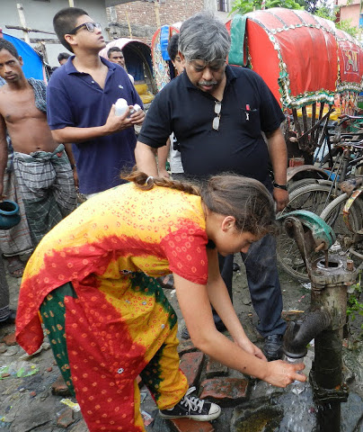

Publications
-

Architecture Agnostic Neural Networks
Sabera Talukder*, Guruprasad Raghavan*, Yisong Yue
Workshop Oral, Neurips 2020
[15 minute video]
-

On the Benefits of Early Fusion in Multimodal Representation Learning
George Barnum*, Sabera Talukder*, Yisong Yue
Workshop, Neurips 2020
-

A Smoke Removing DC-DC Converter Composed of a Seven Stage Class DE Rectifier and a Class ϕ2 Inverter
Sabera Talukder
Electrical Engineering Honors Thesis Stanford University 2018
-

Exploring Visual Memory Formation in Drosophila melanogaster
Sabera Talukder
Biochemistry Honors Thesis Stanford University 2018
-

A Portable Electrostatic Precipitator to Reduce Respiratory Death in Rural Environments
Sabera Talukder, Sanghyeon Park, Juan Rivas-Davila
Oral, IEEE Compel 2017
Past Projects
-

Brains in Silicon Lab Researcher
As a Stanford undergrad, I built a 758,528 neuron model of the human neocortex and thalamus spanning over 15 of Neurogrid's 16 chips. Neurogrid is a biomorphic computing circuit board. At the time, the model I created was the largest hardware model of the brain in terms of number of neurons.
-
Medtronic Deep Brain Stimulation Pain Researcher
In 2013 I interned in the Neuromodulation Division at Medtronic HQ in Minneapolis. I worked in the Neuromodulation Deep Brain Stimulation Pain group and developed a procedure for pain threshold testing that replaces the traditional method of “1 to 5” pain response.
-

Pani Purification [Water Purification]
When first visiting my father’s home country of Bangladesh I saw how difficult it was for many to access clean drinking water. My experiences inspired me to create a <$25, solar-powered, easily-maintainable, UVc water purification system that I deployed in daycares for street children in Dhaka, Bangladesh.
This 3 year research project (2010-2013) led to my recognition as 1 of 5 international Google Science Fair Finalists and 1 of 13 international Scientific American Science in Action Finalists. I also spoke about my work on NPR's Science Friday, PBS's Newshour Special, HBO's Showtime, Google's Google+ Broadcast, and the California Academy of Sciences.